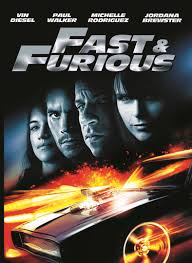

Fast and forious
Fast & Furious-filmerna är en av de mest populära och långlivade actionfilmserierna någonsin. Serien började 2001 med filmen The Fast and the Furious, där vi introducerades till Dominic Toretto (spelad av Vin Diesel), en karismatisk ledare för ett gäng street racers som också är involverade i olagliga aktiviteter, som lastbilsrån. Brian O'Conner (spelad av Paul Walker), en undercover-polis, infiltrerar Toretto-gänget men blir snabbt nära vän med dem och särskilt med Toretto själv, vilket leder till komplicerade lojaliteter och till sist till att Brian byter sida för att skydda Dom och hans "familj". Under seriens gång utvecklas handlingen från att handla om illegala street races i Los Angeles till att bli en internationell actionthriller med fokus på högteknologiska stölder, sabotage och globala konspirationer. Genom åren expanderas filmens rollista med flera färgstarka karaktärer, inklusive Dwayne "The Rock" Johnson som Luke Hobbs, en tuff agent som först är på jakt efter Toretto-gänget men senare går med dem i kampen mot större hot. Fast & Furious-filmerna är kända för sina spektakulära biljaktscener, överdrivna och ofta fysik-trotsande stunts, samt deras starka teman om familj och lojalitet. Toretto-gänget beskrivs som en "familj", där vänskap och lojalitet står över allt annat, vilket är ett återkommande tema genom hela serien. Franchisen har också skiftat fokus med tiden, från enkla street racing-filmer till episka actionfilmer som involverar globala hot, hacker-attacker, och till och med scener i rymden. Den nionde filmen i serien, F9 (2021), fortsätter att utforska Toretto-familjens historia och introducerar Doms förlorade bror, Jakob Toretto (spelad av John Cena), som en ny antagonist. Under hela serien förblir kärnan dock densamma: en stark gemenskap och ett aldrig sviktande fokus på familjeband. Franchisen har också gett upphov till en spinoff-film, Hobbs & Shaw (2019), som fokuserar på karaktärerna spelade av Dwayne Johnson och Jason Statham. Med sin mix av action, familjedynamik och spektakulära stunts har Fast & Furious-filmerna blivit en kulturell ikon och fortsätter att locka en global publik, med fler uppföljare planerade i framtiden